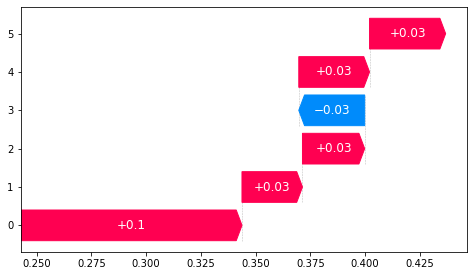

<h1 mat-dialog-title>Cardiac analysis {{data.session}}</h1>
<mat-dialog-content class="mat-typography">
    <div class="row">
        <div class="col-lg-6  col-sm-12">
            
        </div>
        <div class="col-lg-6 col-sm-12">
            
        </div>
    </div>
</mat-dialog-content>
<mat-dialog-actions align="end">
    <button mat-button mat-dialog-close>Close</button>
</mat-dialog-actions>